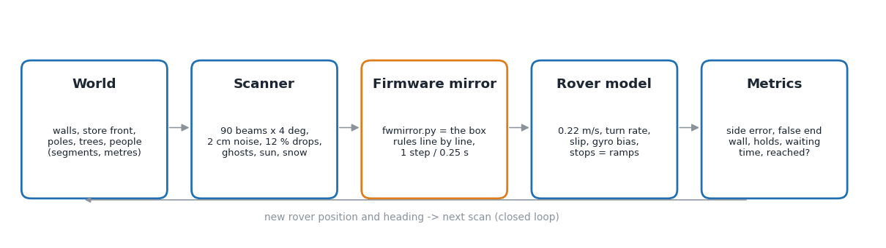
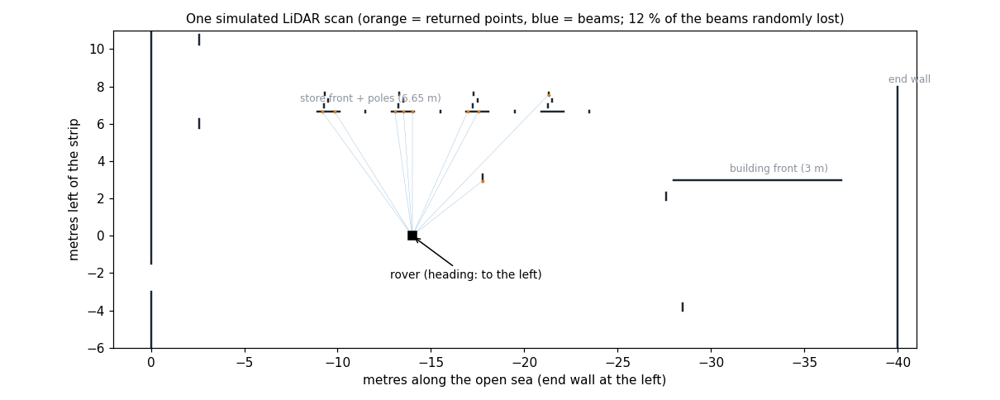
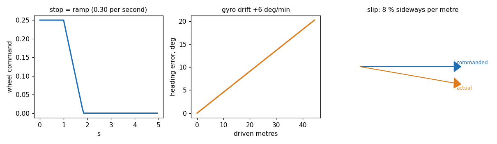

Rover kit 04, box firmware cas_box_mission v10.3. Code: cas_box_mission/tools/. All numbers are from runs on 9 Nov 2026 or earlier.
We cannot bring crowds, snow or a hundred different starting positions to the campus on demand, and every field test costs a day. So the box rules were copied, line by line, into Python (fwmirror.py), and put into a small closed-loop world: a map in metres, a simulated LiDAR that "sees" that map, and a simple rover that moves according to what the rules decide. One run = one complete crossing, thousands of runs = a table in a minute. It is our own simulator (about 1,500 lines of Python, no ROS, no Gazebo): the logic we want to test is ESP32 C++ without ROS, so any other simulator would still need this Python copy of the rules.

| Part | What it does | File / function |
|---|---|---|
| World | Segments (lines) in metres: B wall behind, the store front with its two poles and two trees, the building front at 3 m, the end wall at 40 m, people as 0.4 m squares (standing, walking, bouncing). Positions come from the real LiDAR logs (campus_2…c102_4). | sim_open_sea.py: world(), crowd() |
| Scanner | Ray casting: 90 beams, 4° apart, angle (i·4+2)° clockwise from the front, the same as the real LidarScan. Gaussian noise 2 cm, 12 % of the beams lost, values below 35 cm removed (the real filter). Weather and sun are added per scan: daylight ghosts (1–2 beams at 20–34 cm in 15–20 % of scans, measured in campus_6), a blind 40° slice for low sun, snow = every beam has an 8 % chance of a random near return (0.35–3 m) and a 25 % chance of nothing. | scan(), env_noise() |
| Firmware mirror | The decision code: reference order (row, building, B wall, end wall), cross-track PID 10·e + 1.5·∫e + 20·ė (±8°), the wide / nearest-surface end-wall check with its leaky counter, the people hold rule (0.6 m, 0.5 s), the turn structure detector (TurnV9, StructGrid), the start alignment (StartAlign), the leg-4 ramp-opening finder (find_gap). One step per 0.25 s, the same as the box. | fwmirror.py, sim_start_align.py, replay_l4_gap.py |
| Rover model | Speed 0.22 m/s (leg 4: 0.30), the heading follows the target at about 12°/s (DriveStraight), the gyro drifts (bias ±3 … 6°/min), sideways slip (3–8 % of the distance, a slanted cobblestone), pivots end ±3° off, stops are ramps. | run(), align() |
| Metrics | Side error at 24 m and at the end wall, false end-wall stops (people taken for the wall), holds and waiting time, reached or not. | batch(), crowd_table(), env_table() |


tools/replay_.py runs the same* mirror on the real recorded scans of 12 logs and compares with what the box did (first turn, end wall, Open Sea references, start alignment, ramp opening). Example: replay_end_wall.py finds the end wall within 0.2 m of where the box really turned in 7 of the 9 runs that ended at the end wall (it misses campus_3 and test2).| Question | Command | Result (v10) |
|---|---|---|
| Crowds: do people look like the end wall? 12 scenarios x 20 runs | python3 sim_open_sea.py --crowd | person 0.8 m in front of the wall: 9 → 0 of 20 false stops; no crowd case with a false stop |
| Sun and snow, 12 runs each | --env | clear, glare, low sun, snowy ground 12/12; falling snow 10/12; everything at once 7/12 |
| Faults: row missing, gap, B wall hidden, false lines, heading glitches, gyro bias | --faults --v7only | missing row / gap / hidden wall: ≤2 cm; false line: 1–2 m |
| Nearest-surface end-wall rule | --nearest | no false end wall in any crowd case |
| Turn at the right pillar with people around | python3 sim_people.py | 5,670 cases, 93.3 % on target, 0 wrong pillar |
| Start alignment after a late turn (v10.3) | python3 sim_start_align.py | in-band starts untouched 100/100; late starts (+0.7 … +2.2 m) end 0.06–0.2 m off the strip |
| Start alignment in snow noise, 25 % dropouts, pivot error 6°, slip 8 %, people | --stress | untouched 120/120 in band; 131 of 144 late starts within 0.5 m; 0 of 144 worse. (A first version using the plain nearest point failed here: 13 of 144 worse. The simulator found it before the field did.) |
| Ramp opening on leg 4 | python3 sim_l4_gap.py | 180 approaches: 0 hits on the stairs |
cd cas_box_mission/tools python3 sim_open_sea.py --crowd # crowd table (about 1-2 min) python3 sim_start_align.py --quick # start alignment, short python3 replay_turn.py # real logs through the turn rule python3 make_sim_doc_figs.py # redraw the figures of this document
Every tool prints a table; nothing writes to the rover or the box.
| Tool | Why it is not the core of this work |
|---|---|
| LG SVL | discontinued in 2022 |
| CARLA | built for cars, roads and traffic; no campus walkways |
| RViz | a viewer, not a simulator; we use it only to show a log (tools/rviz_replay.py) |
| Gazebo / MATLAB | possible, but need a model of the box rules too; our rules are ESP32 C++, so the Python copy would still be needed. Days of work for a nicer picture, not for better proof. |